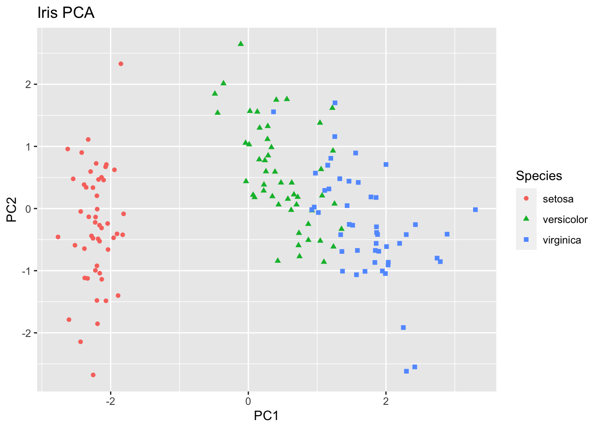

Chapter 14 Ordination
14.1 Libraries and Data
Today, we will work with the package vegan (useful for ordination techniques) and the packages ggplot2 and ggbiplot (useful for fancy plotting). Make sure all these libraries are installed before you begin.
Let’s begin by installing and loading the necessary libraries:
if (!require("vegan")) install.packages("vegan")
if (!require("devtools")) install.packages("devtools")
if (!require("ggplot2")) install.packages("ggplot2")We will use a dataset on measurements of particular parts of the iris plant, across individuals from three different species.
data(iris)Exercise: Take a look at the iris data matrix. How many samples does it have? How many variables? What happens when you run the function plot() on this matrix? Which variables seem to be strongly correlated? (you can use the function cor() to compute the strength of correlations). Speculate as to why some of these variables could be strongly correlated.
14.2 Principal component analysis (PCA)
We’ll perform a PCA of the data. The function prcomp() performs the PCA, and we can assign the result of this function to a new variable (let’s call it “fit”). We must first remove the last column to whatever we give as input to prcomp, as the species names are a non-linear (categorical) variable and we don’t have (for now) any natural measures of distance for species. The option scale=T standardizes the variables to the same relative scale, so that some variables do not become dominant just because of their large measurement unit. We use
irisnumvar <- iris[-5] # Remove the categorical variable
fit<-prcomp(irisnumvar, scale=TRUE) # Perform PCAExercise: Try using the summary() and plot() functions to obtain a summary of the resulting PCA object How many principal components were created? (note that the number of PCs always equals the number of original variables). How much variance does the first principal component serve to explain in our data? How much variance does the second component explain? How many PCs would we need to be able to explain at least 95% of the variation in our data?
The “Rotation” matrix is included inside the fit object we just constructed. You can retrieve it by typing fit[2]$rotation. This matrix contains the “loadings” of each of the original variables on the newly created PCs.
Exercise: Take a look at the rotation matrix. The larger the absolute value of a variable in each PC, the more that variable contributes to that PC. For each component, use the function barplot() to plot the loadings (contributions) of each variable into that component. Which variables contribute most to each component?
Exercise: Use the function “biplot” to plot the first two PCs of our data. The plotted arrows provide a graphical rendition of the loadings of each of the original variables on the two PCs. Across this reduced dimensional space, we can see that particular variables tend to co-vary quite strongly. Which ones? We can also see a separation into two groups on PC1. Based on the previous exercise (looking at the rotation matrix), which variables do you think would be most different between samples in one group and in the other?
14.3 PCA under the hood
Rather than just using a ready-made function to compute a PCA, let’s take a longer route to understand exactly what’s happening under the hood of the prcomp() function.
First, let’s standardize each column of our data so that each column has mean 0 and variance 1
irisdat <- iris[-5]
irisstandard <- apply(irisdat,2,function(x){(x-mean(x))/sd(x)})Now, calculate the covariance matrix. Because the data has been standardized, this is equivalent to calculating the correlation matrix of the pre-standardized data.
cormat <- cov(irisstandard)Then, extract the eigenvalues and eigenvectors of correlation matrix:
myEig <- eigen(cormat)Now, we’ll manually obtain certain values that were automatically computed by the prcomp function when we ran it earlier. We’ll calculate the singular values (square root of eigenvalues) and also obtain the eigenvectors, also called loadings.
sdLONG <- sqrt(myEig$values)
loadingsLONG <- myEig$vectors
rownames(loadingsLONG) <- colnames(irisstandard)Using the loadings, we can plot our original (standardized) data matrix into the new PC-space, by multiplying the data matrix by the matrix of loadings. Plotting the first two rows of the resulting product should reveal the location of our data points in the first two principal components (like we had before):
scoresLONG <- irisstandard %*% loadingsLONG
iristoplot <- data.frame(scoresLONG,iris$Species)
colnames(iristoplot) <- c("PC1","PC2","PC3","PC4","Species")
ggplot(iristoplot, aes(PC1, PC2)) +
geom_point(aes(color=Species, shape = Species)) +
xlab("PC1") +
ylab("PC2") +
ggtitle("Iris PCA")
You can compare the results from the first section (using the ready-made function prcomp) and this section (taking a longer road), to check that the results are equivalent. The function range() returns a vector containing the minimum and maximum of a given vector. Using this function, we can observe that the minimum and maximum differences in values for the loadings, the scores and the standard deviations of the PCs are all infinitesimally small (effectively zero).
range(fit$sdev - sdLONG)## [1] -6.661338e-16 2.220446e-16range(fit$rotation - loadingsLONG)## [1] -6.661338e-16 7.771561e-16range(fit$x - scoresLONG) ## [1] -2.359224e-15 3.108624e-1514.4 Principal components as explanatory variables
We can use principal components as explanatory variables to any linear model. In this case, we’ll use the first two principal components of the PCA we performed above, to perform a logistic regression on the probability that an individual belongs to the species ‘virginica.’ First, let’s create a new variable that is equal to 1 if an individual belongs to this species, and is 0 otherwise. We’ll use this variable as the response variable
isvirginica <- as.numeric(iris[,5] == "virginica")We now collate the principal components from the exercise above into a new dataframe that also includes the response variable we just created.
# The PC scores are stored in the fifth element of fit. Here, we could have also used the object scoresLONG which we obtained by fitting a PCA manually.
PC.scores <- fit[5]
newiris <- data.frame(PC.scores,isvirginica)
colnames(newiris) <- c("PC1","PC2","PC3","PC4","isvirginica")
head(newiris)## PC1 PC2 PC3 PC4 isvirginica
## 1 -2.257141 -0.4784238 0.12727962 0.024087508 0
## 2 -2.074013 0.6718827 0.23382552 0.102662845 0
## 3 -2.356335 0.3407664 -0.04405390 0.028282305 0
## 4 -2.291707 0.5953999 -0.09098530 -0.065735340 0
## 5 -2.381863 -0.6446757 -0.01568565 -0.035802870 0
## 6 -2.068701 -1.4842053 -0.02687825 0.006586116 0Exercise: use the glm() function on the newly created newiris data-frame, to perform a logistic regression for the probability that an individual belongs to the species virginica, using the first two principal components (PC1 and PC2) as explanatory variables. Do both components have fitted effects that are significantly different from 0? Do these results make sense in light of the PCA biplots created in the sections above?
Exercise: Compare the logistic model to another logistic model, this time using only PC1 as the explanatory variable. Which model has the highest AIC score?
14.5 NMDS
We’ll now perform non-metric multidimensional scaling. Let’s first take a look at the raw data we will use. This is a data matrix containing information about dune meadow vegetation. There are 30 species and 20 sites. Each cell corresponds to the number of specimens of a particular species that has been observed at a particular site (Jongman et al. 1987). As one can see, there are many sites where some species are completely absent (the cell value equals 0):
require(vegan)
data(dune)
head(dune)## Achimill Agrostol Airaprae Alopgeni Anthodor Bellpere Bromhord Chenalbu
## 1 1 0 0 0 0 0 0 0
## 2 3 0 0 2 0 3 4 0
## 3 0 4 0 7 0 2 0 0
## 4 0 8 0 2 0 2 3 0
## 5 2 0 0 0 4 2 2 0
## 6 2 0 0 0 3 0 0 0
## Cirsarve Comapalu Eleopalu Elymrepe Empenigr Hyporadi Juncarti Juncbufo
## 1 0 0 0 4 0 0 0 0
## 2 0 0 0 4 0 0 0 0
## 3 0 0 0 4 0 0 0 0
## 4 2 0 0 4 0 0 0 0
## 5 0 0 0 4 0 0 0 0
## 6 0 0 0 0 0 0 0 0
## Lolipere Planlanc Poaprat Poatriv Ranuflam Rumeacet Sagiproc Salirepe
## 1 7 0 4 2 0 0 0 0
## 2 5 0 4 7 0 0 0 0
## 3 6 0 5 6 0 0 0 0
## 4 5 0 4 5 0 0 5 0
## 5 2 5 2 6 0 5 0 0
## 6 6 5 3 4 0 6 0 0
## Scorautu Trifprat Trifrepe Vicilath Bracruta Callcusp
## 1 0 0 0 0 0 0
## 2 5 0 5 0 0 0
## 3 2 0 2 0 2 0
## 4 2 0 1 0 2 0
## 5 3 2 2 0 2 0
## 6 3 5 5 0 6 0Note that here linearity is not a good assumption to make for our ordination: a difference between a site containing 0 specimens (absence) and a site containing 1 specimen is conceptually larger than a difference between a site containing 1 specimen and another site containing 2. In other words, the difference between presence and absence is more important than a difference in quantity of specimens. Thus, our first instinct should not be to perform PCA on it. Because NMDS relies on “distances,” we need to specify a distance metric that we’ll use. The function for performing NMDS in the package ‘vegan’ is called metaMDS() and its default distance metric is “bray,” which corresponds to the Bray-Curtis dissimilarity: a statistic used to quantify the compositional dissimilarity between two different sites, based on counts at each site
Let’s perform NMDS ordination using the Bray-Curtis dissimilarity. Remember that, unlike PCA, NMDS requires us to specify the number of dimensions (k) a priori (the default in vegan is 2). It also performs a series of transformations on the data that are appropriate for ecological data (default: autotransform=TRUE). The trymax option ensures that the algorithm is started from different points (in our case, 50) to avoid local minima.
ord <- metaMDS(dune, k=2, autotransform = TRUE, trymax=50, distance="bray")## Run 0 stress 0.1192678
## Run 1 stress 0.1183186
## ... New best solution
## ... Procrustes: rmse 0.02026835 max resid 0.06494847
## Run 2 stress 0.1990351
## Run 3 stress 0.119268
## Run 4 stress 0.1192678
## Run 5 stress 0.1183186
## ... Procrustes: rmse 3.516369e-05 max resid 0.0001079603
## ... Similar to previous best
## Run 6 stress 0.3684611
## Run 7 stress 0.1183186
## ... Procrustes: rmse 8.173422e-05 max resid 0.0002387525
## ... Similar to previous best
## Run 8 stress 0.1808913
## Run 9 stress 0.2066373
## Run 10 stress 0.1192678
## Run 11 stress 0.1192679
## Run 12 stress 0.1192679
## Run 13 stress 0.1183186
## ... Procrustes: rmse 2.651151e-06 max resid 9.418931e-06
## ... Similar to previous best
## Run 14 stress 0.1183186
## ... Procrustes: rmse 8.244645e-06 max resid 2.357134e-05
## ... Similar to previous best
## Run 15 stress 0.1183186
## ... New best solution
## ... Procrustes: rmse 1.721404e-05 max resid 5.186503e-05
## ... Similar to previous best
## Run 16 stress 0.1812943
## Run 17 stress 0.1183186
## ... Procrustes: rmse 6.586404e-05 max resid 0.0002147542
## ... Similar to previous best
## Run 18 stress 0.1183186
## ... Procrustes: rmse 9.499335e-06 max resid 3.092699e-05
## ... Similar to previous best
## Run 19 stress 0.1183186
## ... New best solution
## ... Procrustes: rmse 5.808782e-06 max resid 1.978519e-05
## ... Similar to previous best
## Run 20 stress 0.1192681
## *** Solution reachedAs you can see, the function goes through a series of steps until convergence is reached. Let’s plot the results:
par(mfrow=c(1,2))
plot(ord,choices=c(1,2),display="sites",main="NMDS ordination of sites",type="t")
plot(ord,choices=c(1,2),display="species",main="NMDS ordination of species",type="t")par(mfrow=c(1,1))Here, the option choices determines which NMDS dimensions are being plotted. We only have two dimensions, so there’s only two dimensions that we can plot here. In turn, the option display allows us to plot an ordination of the sites (assuming species are properties of each site), or of the species (assuming sites are properties of each species).
Exercise: Take a look at the plots. Which species tend to co-occcur with each other? Which sites tend to have similar species compositions?
Exercise: Change the number of dimensions and re-run the ordination. Note that you’ll have to create multiple plots to observe all the dimensions if there are more than 2 of them. How do the results change?
Exercise: Change the distance metric used and re-run the ordination with k=2 (e.g. try using the Euclidean distance instead). You can take a look at the list of possible distances and their definitions using ?vegdist. Do the results change? Why?